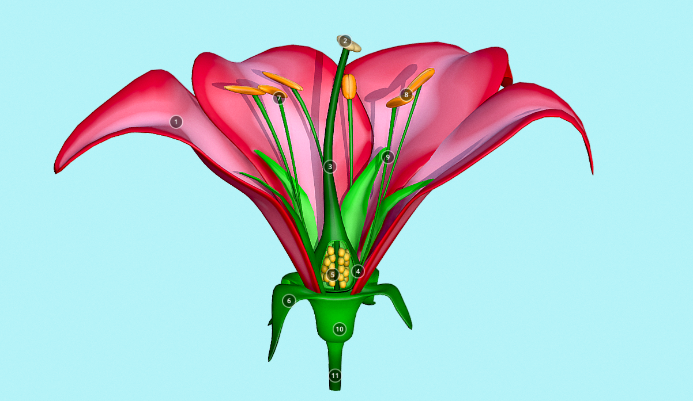

🥽 Vista VR simple (cardboard)
Esta es una vista básica pensada para lentes tipo cardboard. Muestra dos paneles idénticos para dar sensación de profundidad usando una imagen del diagrama de la flor.

Para una VR más avanzada, puedes integrar A-Frame, Three.js o WebXR según los recursos de tu laboratorio.